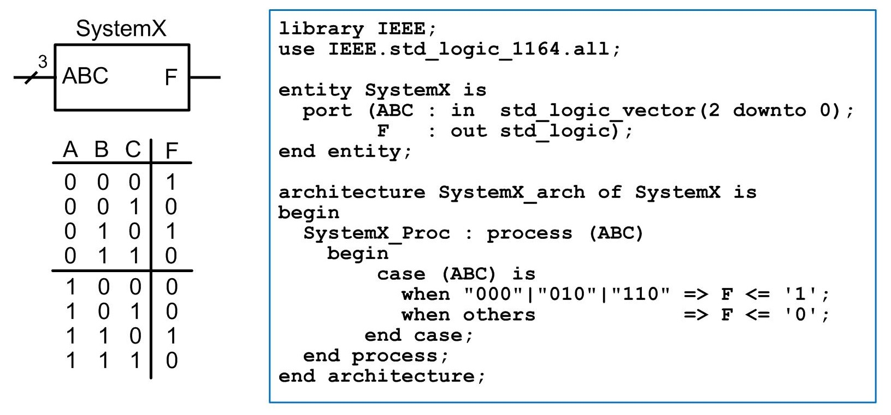

|  |
Module 8 - VHDL (part 2) Weeks 2, 3, and 4 |
Learning Outcomes – After completing this module, you will be able to:
8.1 Design a VHDL model for a combinational logic circuit using a process and an if/then statement.
8.2 Design a VHDL model for a combinational logic circuit using a process and a case statement.
8.3 Design a VHDL test bench to exhaustively stimulate a device under test.
8.4 Design a VHDL test bench to automatically verify the proper operation of a device under test using report and assert statements.
8.5 Design a VHDL test bench that reads in test vectors from an external file.
8.6 Design a VHDL test bench that writes the status of the test to an external file.
8.7 Design a VHDL test bench that writes the status of the test to a computer's STD_OUTPUT.
8.8 Design a VHDL model of a sequential logic circuit using a process and sequential signal assignments.
Learning Activities - To meet these learning objectives, you should do the following:
Section 8.1 - The Process
- Read: Section 8.1 in the textbook
- Do: HW 8.1 (MC quiz)
Section 8.2 - Conditional Programming Constructs
- Read: Section 8.2 in the textbook
- Do: HW 8.2 (VHDL design/simulation)
___________________________________________________________
Section 8.3 - Signal Attributes
- Read: Section 8.3 in the textbook
- Do: HW 8.3 (MC quiz)
Section 8.4 - Test Benches
- Read: Section 8.4 in the textbook
- Do: HW 8.4 (VHDL design/simulation)
Laboratory Experiment 8(a) - 7 Segment Decoder using a Process
- Read: Lab 8(a) Handout
- Do: Complete the lab experiment and demo to the instructor. Upload your top.vhd to the Lab 8(a) - DropBox
___________________________________________________________
Section 8.5 - Packages
- Read: Section 8.5 in the textbook
- Do: HW 8.5 (VHDL design/simulation)
Laboratory Experiment 8(b) - Design Re-Use & Binary Characters
- Read: Lab8(b) Handout
- Do: Complete the lab experiment and demo to the instructor. Upload your top.vhd to the Lab 8(b) - DropBox
End of Module Quiz
- Take the Module 8 Quiz (Timed Quiz, you have 60 minutes)